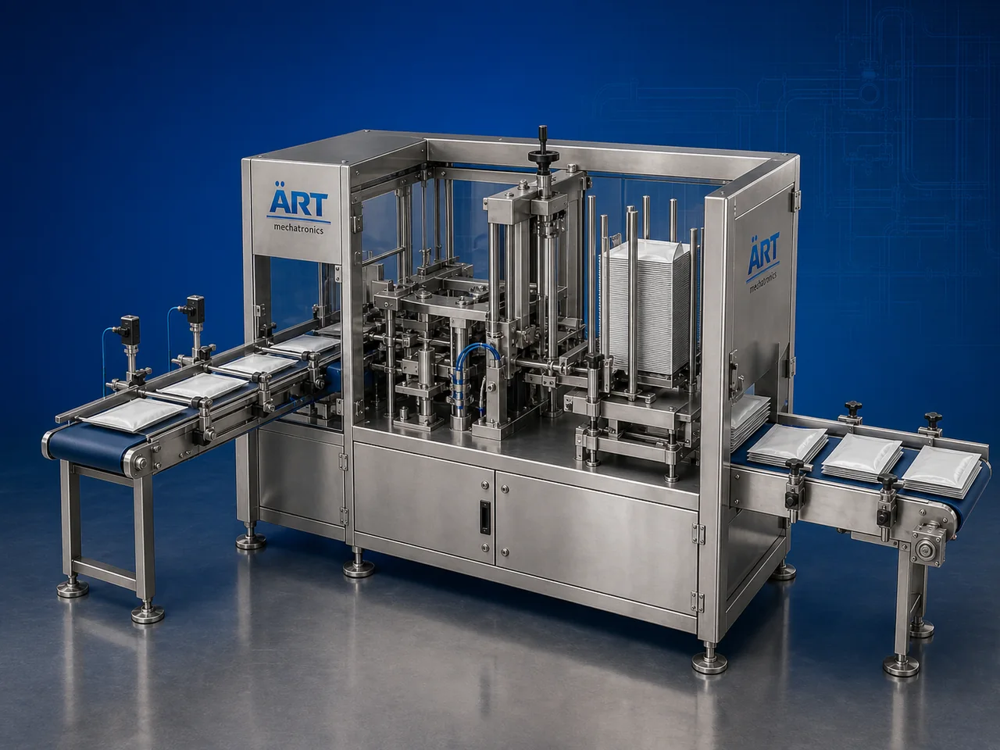

Counting & Stacking Machine (Automatic Product Counting & Stacking System)
A Counting & Stacking Machine, also known as an Automatic Counting Machine, Product Stacking Machine, Sachet Counting Machine, or Product Grouping & Stacking System, is an advanced industrial automation solution designed for automatic product counting, arranging, grouping, stacking, conveying,…

About the Count & Stack
Counting and stacking systems are widely used for: ✔ Sachet counting and stacking ✔ Pouch grouping operations ✔ Packet stacking systems ✔ Tobacco pack counting ✔ FMCG product handling ✔ Secondary packaging automation ✔ Product batching operations ✔ Continuous industrial product handling
The machine improves: ✔ Product counting accuracy ✔ Stacking consistency ✔ Production efficiency ✔ Packaging line automation ✔ Labor productivity ✔ Product handling speed ✔ Secondary packaging efficiency
Industrial counting & stacking machines use: ✔ Servo synchronized conveyor systems ✔ Automatic counting sensors ✔ PLC and HMI automation controls ✔ Product grouping mechanisms ✔ Precision stacking systems
to automatically count, arrange, and stack products with superior accuracy and high production efficiency.
Counting & stacking machines are widely used in industries such as:
Pan masala industries Mouth freshener industries Shisha tobacco industries Cigarette industries Food processing industries FMCG industries Pharmaceutical industries Snack food industries
where automated product grouping and high-speed secondary packaging support are essential.
The machine is highly suitable for: ✔ Sachet counting and stacking ✔ Pouch grouping systems ✔ Packet batching operations ✔ Tobacco pack stacking ✔ FMCG product handling ✔ Secondary packaging automation
ART Mechatronics offers high-performance counting & stacking machines, engineered for continuous industrial operation, accurate product handling, synchronized stacking performance, and reliable long-term automation.
Working Principle of Counting & Stacking Machine
- 1. Product Feeding Products are fed continuously through synchronized conveyor systems.
- 2. Product Counting Process Automatic sensors and synchronized counting systems count products accurately at high speed.
Servo synchronization ensures precise counting and smooth product movement.
- 3. Product Grouping & Batch Formation Machine automatically groups products into predefined quantities for stacking operations.
- 4. Product Stacking Operation Machine handles: ✔ Sachets ✔ Pouches ✔ Packets ✔ Tobacco packs ✔ Cigarette packs ✔ FMCG products ✔ Food products
accurately and continuously.
- 5. Stack Transfer & Discharge Finished stacks are transferred automatically for: Cartoning Bundling Case packing Secondary packaging Dispatch operations
- 6. Automation & Integration Machine integrates with: Packaging lines Collating systems Cartoning machines Conveyor systems Robotic handling systems
for complete packaging line automation.
Types of Counting & Stacking Machines
- 1. Sachet Counting & Stacking Machine Designed for: ✔ Sachet grouping and stacking applications
- 2. Pouch Counting Machine Suitable for: ✔ Pouch batching and stacking systems
- 3. Tobacco Pack Stacking Machine Uses: ✔ Cigarette and shisha tobacco pack handling systems
- 4. FMCG Product Counting Machine Designed for: ✔ Consumer product grouping applications
- 5. Servo Driven Counting & Stacking Machine Suitable for: ✔ Precision high-speed product handling operations
- 6. Fully Automatic Counting & Stacking System Designed for: ✔ Complete industrial secondary packaging automation lines
Industries Using Counting & Stacking Machines
🌿 Pan Masala & Mouth Freshener Industry Sachet and pouch counting with stacking automation systems. 🚬 Tobacco Industry Cigarette packs, shisha tobacco packs, oral nicotine products, and smokeless tobacco stacking systems. 🛒 FMCG Industry Consumer product counting and secondary packaging systems. 🍃 Food Processing Industry Snack pouch grouping and product stacking systems. 💊 Pharmaceutical Industry Medicine packet counting and healthcare packaging systems. 🍿 Snack Food Industry Snack pouch counting, batching, and stacking systems.
Features & Advantages
✔ High-speed automatic counting and stacking operation ✔ Accurate product counting and grouping systems ✔ Smooth and synchronized product handling ✔ PLC and servo automation control systems ✔ Improves packaging line productivity ✔ Reduces labor dependency and handling errors ✔ Supports multiple product formats and sizes ✔ Reliable long-term industrial performance ✔ Continuous secondary packaging support
Technical Highlights
Machine Type: Automatic counting machine Product stacking machine Secondary packaging automation system Handling Integration: Automatic conveyor systems Servo product handling systems Grouping and counting systems Features: PLC control system Servo synchronization Touchscreen HMI Automatic counting sensors Batch formation systems Applications: Sachets Pouches Packets Tobacco packs FMCG products Automation: Semi-automatic Fully automatic industrial systems
Turnkey Counting & Stacking Solutions
ART Mechatronics offers: Complete counting and stacking systems Automatic product grouping solutions Packaging automation integration systems Conveyor synchronization systems Installation & commissioning After-sales service & AMC
Why Choose Art Mechatronics
Expertise in industrial packaging and automation systems Customized counting & stacking solutions for multiple industries High-performance and durable automation technology Advanced PLC and servo automation systems Proven industrial packaging performance across sectors
Applications
Pan Masala Manufacturing Plants Shisha Tobacco Packaging Units FMCG Packaging Facilities Food Processing Industries Pharmaceutical Manufacturing Plants Snack Packaging Industries
Get pricing & specs for the Count & Stack
Share the product, target capacity, current process and plant location. These details help our engineers discuss the right machine or line configuration.
One partner, from design to start-up
ART Mechatronics designs, manufactures, installs and commissions your Count & Stack solution with regional presence in India, UAE and Thailand.